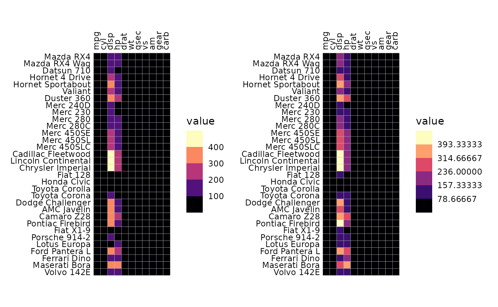
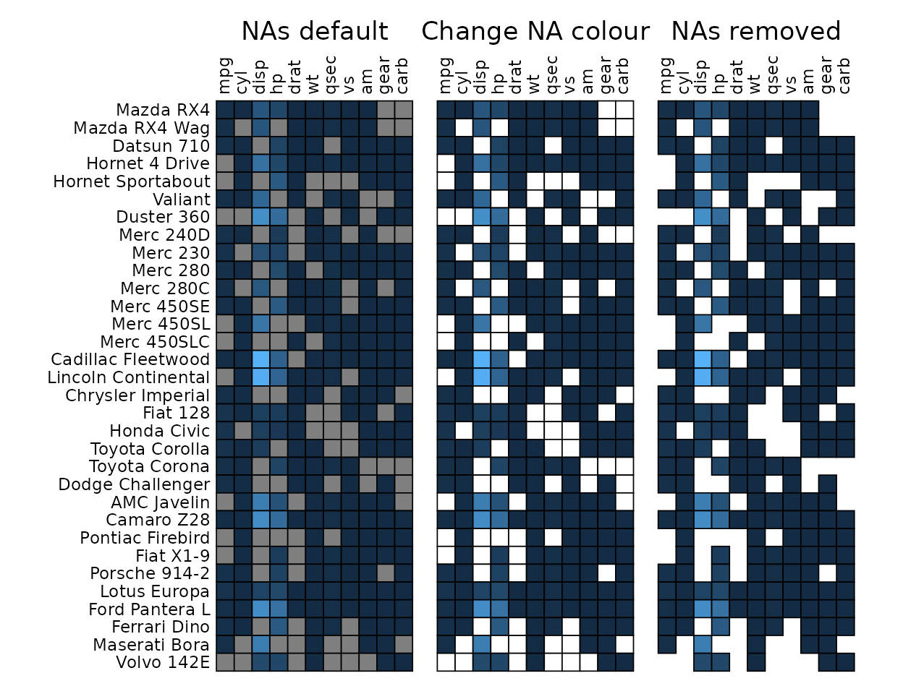
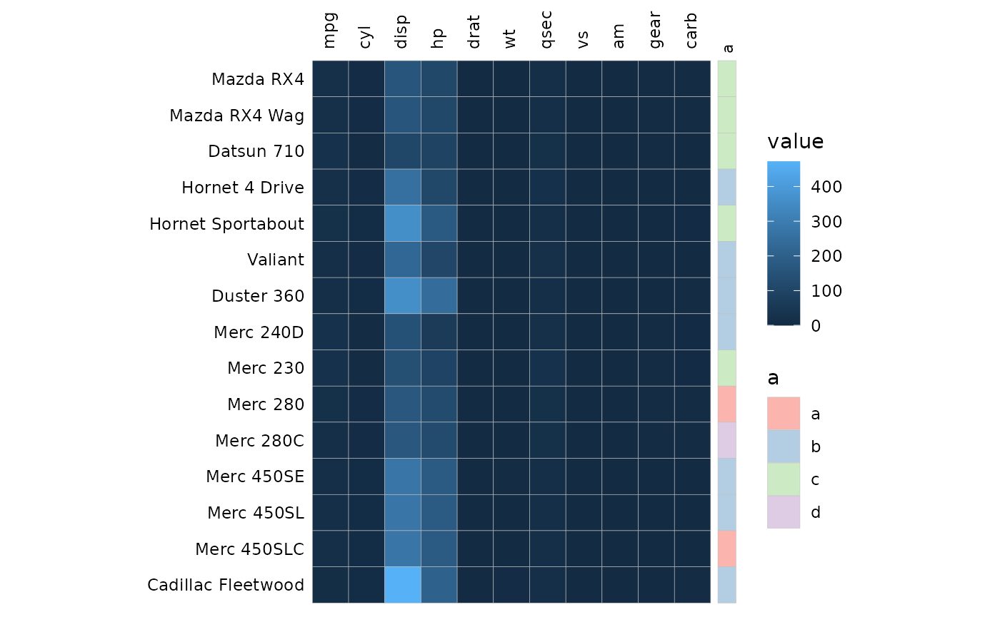
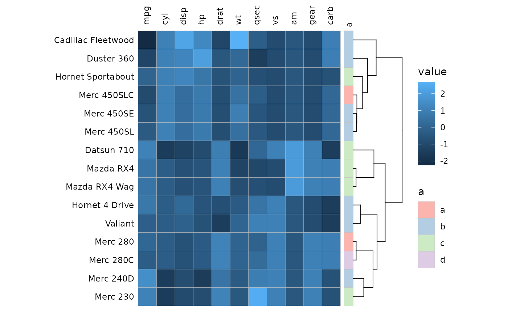
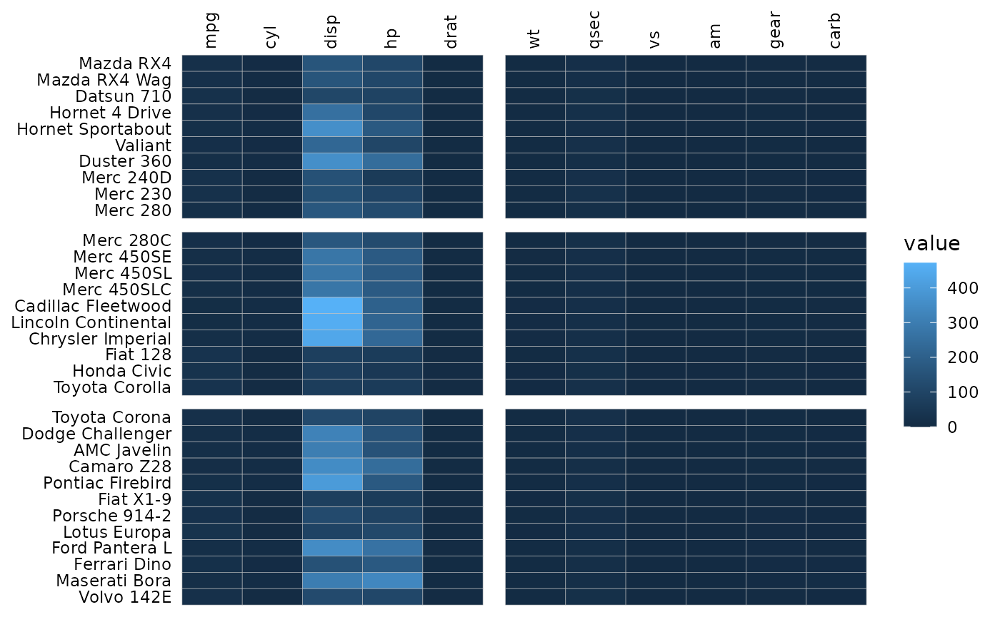
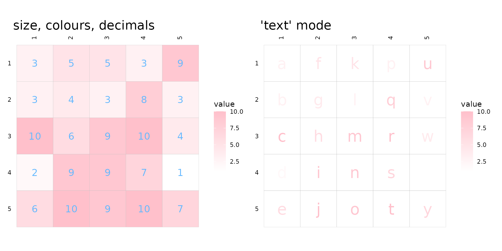

The gghm() function can be used to make a heatmap from a
matrix of data frame. Rows and columns are ordered the same way as in
the input.
library(ggcorrheatmap)
library(ggplot2)
library(dplyr)
library(patchwork) # For pasting together plots
gghm(mtcars)The ggcorrhm() function uses gghm() to
build a correlation heatmap. The correlations between the columns in the
input are computed and plotted.
If the matrix being plotted is symmetric, the axis labels are drawn
on the diagonal. This behaviour can be changed using the
show_names_diag, show_names_x and
show_names_y arguments. A symmetric heatmap can also be
plotted using triangular and mixed triangular layouts, explained more in
the correlation matrix and mixed layouts articles.
ggcorrhm(mtcars)
Specifying colours
The colours of the heatmap can be adjusted by passing a string
specifying a Brewer or Viridis scale or a
ggplot2::scale_fill_* function call to the
col_scale argument. The limits can be changed by giving a
vector to the limits argument.
# Use the Viridis D (can also be "viridis") option
gghm(mtcars, col_scale = "D")The bins argument creates a binned scale (only for
continuous data). If bins is a float number (class
‘double’), ggplot2 will try to put the breaks at nice
numbers at the cost of changing the number of bins. If bins
is an integer the exact number of bins will instead be prioritised, but
the breaks may end up at strange numbers.
plt1 <- gghm(mtcars, col_scale = "A", bins = 6)
plt2 <- gghm(mtcars, col_scale = "A", bins = 6L)
plt1 + plt2
If the values in the input matrix are discrete a discrete scale will be used. If the input is a data frame with mixed types (e.g. some columns are character vectors and some numeric), the resulting heatmap will be discrete.
# Heatmap with discrete values
# Border colour and linewidth can be changed using the `border_col` and `border_lwd` arguments
set.seed(123)
gghm(replicate(15, sample(letters[1:3], 15, TRUE)),
col_scale = "Pastel2", border_col = "thistle1",
border_lwd = 1)For gghm() fill, colour and size legends are shown by
default. The legend order can be changed using the
legend_order argument. ggcorrhm() tries to
hide some legends by default. Legends and scales are covered more in the
scales and legends article.
Plotting modes
The mode argument takes a string and determines how the
values will be plotted. ‘heatmap’ or ‘hm’ gives the default heatmap,
‘text’ results in the values being written out, and any number from 1 to
25 changes the cells to the corresponding shapes (pch). There is also a
‘none’ mode which draws empty tiles.
In ‘text’ mode the text colour scales with the values in the cells.
Instead of fill_scale, use the col_scale
argument to set the scale.
gghm(mtcars[1:15, ], mode = "text",
# Viridis "A" ("magma")
col_scale = "A")
In shape modes, 1-20 use colour scales and 21-25 use fill scales. The
sizes scale with the cell values and the scale can be customised by
passing ggplot2::scale_size_* functions to the
size_scale argument.
For fillable shapes the border colour and linewidth can be changed
using the border_col and border_lwd
arguments.
gghm(mtcars[1:15, ], mode = 22,
border_col = "lightblue", border_lwd = 1,
col_scale = "G",
# The range argument sets the range of sizes to plot
size_scale = scale_size_continuous(range = c(1, 7)))
gghm(mtcars[1:15, ], mode = "none")Cell borders
Cell borders are by default grey, but can be removed by setting
border_col (border colour) or border_lwd
(border linewidth) to NA or border_lty (border linetype) to
0 (if mode is not a number) or border_lwd to 0
(if mode is a number).
# Use the volcano data
# It contains many rows and columns making the axes hard to read.
# Can either turn off labels with `show_names_x` and `show_names_y`, or use
# ggplot2::scale_x/y_discrete to change the labels
# (keep in mind that the y label order is reversed in the default layout and that overwriting the scale can change the label positions)
gghm(volcano, col_scale = "H",
border_col = NA, border_lwd = 0,
show_names_x = FALSE, show_names_y = FALSE)border_col, border_lwd, and
border_lty can take either values of length 1 or the same
length as the input data. Using the return_data argument to
get the plotting data makes it easier to implement conditional
customisation of borders.
# Single values as input
plt1 <- gghm(cor(mtcars), col_scale = "G",
border_col = "orange", border_lwd = 1, border_lty = 2)
# Two-step approach:
# - Make a plot with the data of interest, retrieve the plotting data
# - Make col, lwd, lty vectors based on some condition in the plotting data and pass to gghm
plt_dat <- gghm(cor(mtcars), return_data = TRUE)$plot_data
plt_dat <- mutate(plt_dat,
# The plotting data contains the columns 'row', 'col', and 'value', so avoid those names
colr = case_when(row == "hp" ~ "red", col == "vs" ~ "yellow", TRUE ~ "grey"),
lwd = case_when(row == "hp" | col == "vs" ~ 1.5, TRUE ~ 0.5),
lty = case_when(value > 0.5 ~ 1, TRUE ~ 2))
plt2 <- gghm(cor(mtcars), col_scale = "G",
border_col = plt_dat$colr,
border_lwd = plt_dat$lwd,
border_lty = plt_dat$lty)
# Make one figure with both plots using the patchwork package
plt1 + plt2Handling NAs
NAs in the data can be removed using the na_remove
argument or set to a specific colour using the na_col and
col_scale arguments. Setting na_remove to
TRUE removes NAs from the plot, but they can still
interfere with clustering if a whole row or column is all NAs.
# Introduce NAs
df_na <- as.matrix(mtcars)
set.seed(123)
df_na[sample(length(df_na), 100)] <- NA
# With NAs and the default colour
na_plt1 <- gghm(df_na, legend_order = NA,
# Darker borders for demonstration
border_col = "black", border_lwd = .3) +
labs(title = "NAs default")
# Colour NAs using scale function
na_plt2 <- gghm(df_na, legend_order = NA, show_names_y = FALSE,
border_col = "black", border_lwd = .3,
na_col = "white") +
labs(title = "Change NA colour")
# Remove NAs, removes the border as well
na_plt3 <- gghm(df_na, legend_order = NA, show_names_y = FALSE,
border_col = "black", border_lwd = .3,
na_remove = TRUE) +
labs(title = "NAs removed")
na_plt1 + na_plt2 + na_plt3 & theme(plot.title = element_text(hjust = 0.5))
Clustering and annotation
Clustering can be applied to the rows and columns using the
cluster_rows and cluster_cols arguments. See
the clustering article for more on
clustering.
Row and column annotation is added by providing data frames to the
annot_rows_df and annot_cols_df arguments.
More details on annotation can be found in the annotation article.
set.seed(123)
# Make annotation data, use 15 rows for visibility
row_annot <- data.frame(.names = rownames(mtcars)[1:15],
a = sample(letters[1:4], 15, TRUE))
gghm(mtcars[1:15, ], annot_rows_df = row_annot, annot_rows_names_side = "top")
Clustering and annotation can of course be added simultaneously.
gghm(scale(mtcars)[1:15, ], cluster_rows = TRUE,
annot_rows_df = row_annot, annot_rows_names_side = "top")
Cell labels
Cell labels can be displayed by using the cell_labels
argument which takes either a logical or a matrix or data frame. If
logical, the cell values are displayed. If a matrix/data frame, those
values are used instead. The matrix should contain the same row and
column names as the input, any rows or columns with different names or
cells with NAs will be silently dropped.
set.seed(123)
# Make 5x5 matrix to plot with values between 1 and 10
plot_data <- as.matrix(replicate(5, sample(1:10, 5, TRUE)))
# Make label data with letters
label_mat <- plot_data
label_mat[] <- letters[1:25]
# Use a lighter scale for visibility
fill_scl <- scale_fill_gradient(high = "pink", low = "white")
plt1 <- gghm(plot_data, col_scale = fill_scl, cell_labels = TRUE, cell_label_size = 5) +
labs(title = "Using cell values")
plt2 <- gghm(plot_data, col_scale = fill_scl, cell_labels = label_mat, cell_label_size = 5) +
labs(title = "Using external values")
plt1 + plt2 & theme(plot.title = element_text(size = 18))
cell_label_col, cell_label_size and
cell_label_digits control the colours, sizes and number of
decimals (if numeric) of the labels. Keep in mind that data frames
passed to cell_labels are converted to matrices, so if the
data frame contains numbers and strings all numbers are converted to
strings and the numbers will not be rounded. In that case the numbers
can be rounded before being passed.
As mentioned before, the ‘text’ mode makes cells with text that
scales with cell values. If cell_labels is
TRUE or a matrix/data frame, the labels will be displayed
instead, meaning that user-supplied cell labels can have use colour
scale (also meaning that ‘text’ mode with cell_labels being
FALSE is the same as ‘text’ mode with
cell_labels as TRUE).
plt1 <- gghm(plot_data, cell_labels = TRUE, col_scale = fill_scl,
cell_label_size = 5, cell_label_col = "#63B8FF", cell_label_digits = 4) +
labs(title = "size, colours, decimals")
# Text requires colour instead of fill scale
col_scl <- scale_colour_gradient(high = "pink", low = "white")
plt2 <- gghm(plot_data, cell_labels = label_mat, mode = "text",
col_scale = col_scl, cell_label_size = 8) +
labs(title = "'text' mode")
plt1 + plt2 & theme(plot.title = element_text(size = 18))External customisation
The plotting data can be returned by setting the
return_data argument to TRUE, allowing for
further customisation of e.g. cell labels by adding geoms to the
finished plot as shown below.
As explained in the ‘Cell borders’ section, arguments where the
values are passed on to ggplot2::geom_* functions can be
vectors with one value per cell. The drawing order can get a bit
confusing; for the full, top right and bottom left layouts the cells are
drawn from the top left moving down each column; by contrast, for top
left and bottom right layouts cells are drawn from the bottom left
moving up each column (due to the y-axis levels being reversed). The
rows are ordered in their drawing order in the data returned when
return_data is TRUE so that can be used as a
reference. However, in general, passing vectors to static aesthetics in
ggplot2 can become tricky and adding another geom to the
output plot is more robust.
plot_list <- gghm(scale(mtcars), return_data = TRUE, border_col = NA,
col_scale = scale_fill_gradient2(low = "deepskyblue", mid = "white", high = "salmon"))
# Add own labels based on value (also possible by supplying a matrix to cell_labels)
plot_list$plot_data$lab <- ntile(plot_list$plot_data$value, 5)
plt1 <- plot_list$plot +
geom_text(aes(label = lab), plot_list$plot_data, size = 3)
# Or maybe points (cell_labels uses `geom_text` so the asterisks would not be positioned in the middle of the cells)
plot_list$plot_data$lab <- ifelse(plot_list$plot_data$value > 1 |
plot_list$plot_data$value < -1, "*", NA)
plt2 <- plot_list$plot +
geom_point(data = subset(plot_list$plot_data, !is.na(lab)), shape = "*", size = 4)
plt1 + plt2
There are many arguments, allowing for quite some flexibility in the heatmap layout. Most of the arguments are showcased in the articles, hopefully they can be of some help. They go more into making correlation heatmaps, clustering and annotation, making mixed layout heatmaps, and ways to deal with legends.